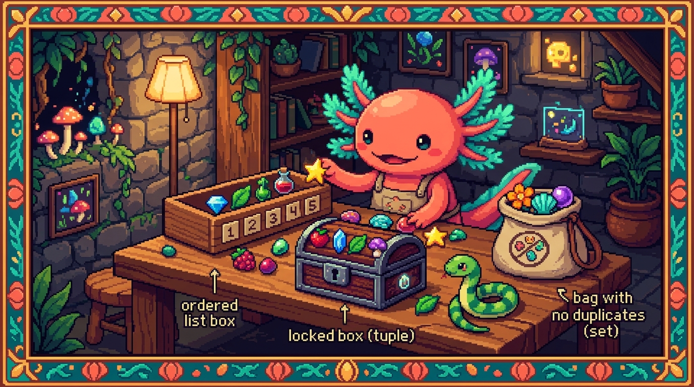

Capitulo 07 — Listas, tuplas y conjuntos a fondo

Hasta ahora guardaste los datos de uno en uno: una variable, un numero, un texto suelto. Pero un programa de verdad casi nunca trabaja asi. PolyPaw no guarda una mision, guarda muchas. No guarda una palabra para aprender, guarda listas enteras. En este capitulo veremos las tres formas que tiene Python de guardar colecciones de cosas: las listas, las tuplas y los conjuntos. Y de paso te enseno un truco precioso que en JavaScript no existia con esta elegancia: las comprensiones de lista. Bit, nuestro ajolote, ya tiene la libreta abierta para anotar misiones. Empecemos.
1. Que es una coleccion (y por que la necesitas)
Imagina que quieres guardar las tres primeras misiones de PolyPaw. Sin colecciones tendrias que hacer algo asi:
mision_1 = "Saludos basicos"
mision_2 = "Numeros del 1 al 10"
mision_3 = "Colores"
Y funciona... hasta que llegas a 50 misiones. ¿De verdad vas a escribir mision_50 a mano? ¿Y como las recorres todas? Es un caos. Justo para evitar eso existen las colecciones: guardan muchos valores bajo un solo nombre.
🟦 ¿Que significa? — Coleccion
Una coleccion es una variable que guarda varios valores juntos, dentro de un mismo recipiente. En lugar de tener 50 cajas separadas, tienes una caja grande con 50 cosas dentro. Para que sirve: agrupar datos que van juntos (todas las misiones, todas las palabras de una leccion) y recorrerlos de una sola pasada con un bucle. Donde se usa en un repo real: en PolyPaw, el archivo
database_manager.pycarga las misiones desdemissions/*.jsony las guarda en una lista para luego mostrarlas en pantalla.
En Python veremos tres colecciones: la lista, la tupla y el conjunto. Cada una resuelve un problema distinto. Arranquemos por la que mas vas a usar.
2. Listas: la coleccion estrella
Una lista es una secuencia de valores en orden, que puedes modificar cuando te de la gana.
🟦 ¿Que significa? — Lista (
list)Una lista es una coleccion ordenada de elementos que puedes cambiar: agregar, quitar o reordenar. Se escribe entre corchetes
[ ]y los elementos van separados por comas. Para que sirve: guardar cosas que crecen o cambian con el tiempo (las misiones que el usuario va desbloqueando, las palabras de una leccion). Donde se usa en un repo real: PolyPaw guarda en una lista las misiones disponibles; cada vez que se agrega un.jsonnuevo enmissions/, ese elemento entra a la lista.
Asi se crea una:
misiones = ["Saludos basicos", "Numeros del 1 al 10", "Colores"]
print(misiones) # ['Saludos basicos', 'Numeros del 1 al 10', 'Colores']
print(len(misiones)) # 3 (len = cuantos elementos tiene)
Si vienes del modulo de JavaScript, esto te va a sonar de inmediato: alla escribias let misiones = [...]. La idea es la misma; lo que cambia es que aqui no hace falta let ni const, y los corchetes funcionan igualito.
2.1 Acceder a un elemento por su indice
Cada elemento ocupa una posicion numerada, y a ese numero lo llamamos indice.
🟦 ¿Que significa? — Indice
El indice es el numero de posicion de un elemento dentro de la lista. Python empieza a contar desde 0, no desde 1. Asi que el primer elemento es el indice
0, el segundo el1, y asi sucesivamente. Para que sirve: sacar un elemento concreto sin tener que recorrer la lista entera. Donde se usa en un repo real: cuando PolyPaw muestra "la mision actual", usa un indice para saber en cual va el usuario.
misiones = ["Saludos basicos", "Numeros del 1 al 10", "Colores"]
print(misiones[0]) # Saludos basicos (el primero)
print(misiones[2]) # Colores (el tercero)
print(misiones[-1]) # Colores (-1 = el ultimo, contando hacia atras)
💡 Tip
El indice
-1siempre es el ultimo elemento,-2el penultimo, y asi hacia atras. Te saca de apuros cuando no sabes cuantos elementos hay pero quieres el del final.⚠️ Cuidado
Si pides un indice que no existe (por ejemplo
misiones[10]cuando solo hay 3), Python te lanza un errorIndexError: list index out of range. Cuando tengas dudas, revisa conlen()antes de pedir indices altos.
2.2 Agregar elementos: append e insert
🟦 ¿Que significa? —
append
appendes un metodo que agrega un elemento al final de la lista. Se escribelista.append(valor). Para que sirve: ir sumando cosas una por una (por ejemplo, cada palabra que el usuario va acertando). Donde se usa en un repo real: al cargarmissions/*.json, PolyPaw recorre los archivos y haceappendde cada mision a la lista de misiones.
misiones = ["Saludos basicos", "Numeros del 1 al 10"]
misiones.append("Colores")
print(misiones) # ['Saludos basicos', 'Numeros del 1 al 10', 'Colores']
🟦 ¿Que significa? —
insert
insertagrega un elemento en una posicion concreta y empuja a los demas hacia la derecha. Se escribelista.insert(indice, valor). Para que sirve: meter algo en medio, no solo al final. Donde se usa en un repo real: si PolyPaw quisiera que una mision de bienvenida apareciera siempre al principio, usariainsert(0, ...).
misiones = ["Numeros", "Colores"]
misiones.insert(0, "Saludos") # lo mete en la posicion 0 (al inicio)
print(misiones) # ['Saludos', 'Numeros', 'Colores']
En JavaScript agregabas al final con push(); en Python eso se llama append(). Es exactamente lo mismo, solo cambia el nombre.
2.3 Quitar elementos: pop y remove
🟦 ¿Que significa? —
pop
popsaca y devuelve un elemento por su indice. Si no le pasas indice, saca el ultimo. Se escribelista.pop()olista.pop(indice). Para que sirve: quitar un elemento y, de paso, quedarte con el para usarlo despues. Donde se usa en un repo real: una "cola" de palabras por repasar: sacas la siguiente conpop(0)y la muestras.
palabras = ["hola", "adios", "gracias"]
ultima = palabras.pop() # saca "gracias" y lo guarda
print(ultima) # gracias
print(palabras) # ['hola', 'adios']
🟦 ¿Que significa? —
remove
removeborra el primer elemento que tenga el valor que le indicas: no por indice, sino por contenido. Se escribelista.remove(valor). Para que sirve: quitar algo cuando sabes que es pero no donde esta. Donde se usa en un repo real: si el usuario ya domina la palabra "hola", PolyPaw podria sacarla de la lista de repaso conremove("hola").
palabras = ["hola", "adios", "gracias"]
palabras.remove("adios")
print(palabras) # ['hola', 'gracias']
⚠️ Cuidado
removerevienta con error si el valor no esta en la lista. Cuando no estes seguro de que exista, comprueba antes conif "adios" in palabras:.
2.4 Ordenar: sort
🟦 ¿Que significa? —
sort
sortreordena los elementos de la lista en su sitio (modifica la lista original). Por defecto va de menor a mayor, o por orden alfabetico cuando son textos. Para que sirve: mostrar las cosas ordenadas (palabras de la A a la Z, puntajes de mayor a menor). Donde se usa en un repo real: PolyPaw podria ordenar alfabeticamente el vocabulario de una leccion antes de mostrarlo.
palabras = ["gato", "ardilla", "zorro", "buho"]
palabras.sort()
print(palabras) # ['ardilla', 'buho', 'gato', 'zorro']
numeros = [5, 1, 9, 3]
numeros.sort(reverse=True) # reverse=True ordena de mayor a menor
print(numeros) # [9, 5, 3, 1]
💡 Tip
Si lo que quieres es una copia ordenada sin tocar la original, usa la funcion
sorted(lista)en lugar del metodolista.sort(). La primera te devuelve una lista nueva; la segunda cambia la que ya tienes. Es una diferencia pequena pero te ahorra mas de un dolor de cabeza.
2.5 Slicing: rebanar una lista
🟦 ¿Que significa? — Slicing (rebanado)
El slicing es sacar un trozo de la lista con
lista[inicio:fin]. Va desde el indiceiniciohasta justo antes del indicefin. Ojo: elfinno se incluye. Para que sirve: quedarte con una parte (las primeras 3 misiones, las palabras de la 5 a la 10). Donde se usa en un repo real: PolyPaw podria mostrar solo las primeras 5 misiones en la pantalla de inicio conmisiones[0:5].
misiones = ["A", "B", "C", "D", "E"]
print(misiones[0:3]) # ['A', 'B', 'C'] (del 0 al 2; el 3 NO entra)
print(misiones[2:]) # ['C', 'D', 'E'] (del 2 hasta el final)
print(misiones[:2]) # ['A', 'B'] (desde el inicio hasta el 1)
print(misiones[-2:]) # ['D', 'E'] (los ultimos dos)
💡 Tip
Piensa el slicing como una regla con marcas entre los elementos.
[1:3]corta despues de la marca 1 y antes de la marca 3. Por eso el numero de la derecha nunca entra: solo marca donde parar.
Bit lo compara con cortar una barra de chocolate: eliges donde empieza el pedazo y donde termina, te quedas con ese trozo y la barra original sigue intacta.
3. Tuplas: listas que NO se pueden cambiar
A veces tienes datos que no deberian cambiar nunca. Para esos casos esta la tupla.
🟦 ¿Que significa? — Tupla (
tuple)Una tupla es como una lista, pero inmutable: una vez creada, no puedes agregar, quitar ni cambiar sus elementos. Se escribe con parentesis
( )en vez de corchetes. Para que sirve: guardar datos fijos que no deben tocarse por accidente (un par de coordenadas, una configuracion que no cambia). Donde se usa en un repo real: los colores de la marca PolyPaw (por ejemplo, los componentes RGB de un color) podrian ir en una tupla, porque nunca cambian.🟦 ¿Que significa? — Inmutable
Algo inmutable es algo que no se puede modificar despues de crearlo. Lo contrario es mutable (modificable), como las listas. Para que sirve: proteger datos de cambios accidentales; si intentas tocarlos, Python te avisa con un error. Donde se usa en un repo real: valores constantes de configuracion en cualquier proyecto serio.
color_polypaw = (124, 58, 237) # un color RGB, no deberia cambiar
print(color_polypaw[0]) # 124 (se accede igual que una lista)
# Pero si intentas cambiarlo...
color_polypaw[0] = 200 # ❌ TypeError: 'tuple' object does not support item assignment
⚠️ Cuidado
Una tupla de un solo elemento necesita una coma:
(5,)es una tupla, pero(5)es solo el numero 5 entre parentesis. Esa coma es justo lo que la convierte en tupla.💡 Tip
¿Cuando usar tupla y cuando lista? Hazlo simple: si los datos van a cambiar (crecer, ordenarse, borrarse), usa lista. Si son fijos para siempre, usa tupla. Como bonus, la tupla es un pelin mas rapida y le deja claro a quien lea tu codigo que "esto no se toca".
En JavaScript no habia tuplas de verdad; lo mas parecido era un array marcado como const, pero ese array se podia modificar por dentro igual. La tupla de Python si te bloquea en serio.
4. Conjuntos: sin duplicados, por diseno
A veces lo unico que te interesa es que cosas tienes, sin repetir y sin que importe el orden. Ahi es donde el conjunto se luce.
🟦 ¿Que significa? — Conjunto (
set)Un conjunto es una coleccion que no permite elementos repetidos y no tiene orden. Se escribe con llaves
{ }. Para que sirve: llevar registro de cosas unicas (que palabras ya aprendio el usuario, que misiones completo) sin pelearte con los duplicados. Donde se usa en un repo real: PolyPaw podria usar un set para las palabras que el usuario ya domina: aunque acierte la misma palabra dos veces, en el set aparece una sola vez.
palabras_aprendidas = {"hola", "gracias", "adios"}
palabras_aprendidas.add("hola") # ya estaba: el set lo ignora
palabras_aprendidas.add("buenos dias")
print(palabras_aprendidas)
# {'hola', 'gracias', 'adios', 'buenos dias'} (sin "hola" repetido)
⚠️ Cuidado
Un conjunto no tiene orden garantizado, asi que
conjunto[0]te da error: no puedes pedir "el primero" porque ahi no hay un primero. Si necesitas orden o posiciones, vuelve a la lista.💡 Tip
Truco que vas a usar mil veces: para quitar duplicados de una lista, conviertela a set y luego de vuelta a lista.
list(set(mi_lista))te deja solo los valores unicos (eso si, puede cambiar el orden).
4.1 Union e interseccion
Donde de verdad brillan los conjuntos es cuando comparas dos grupos.
🟦 ¿Que significa? — Union
La union de dos conjuntos es un conjunto nuevo con todos los elementos de ambos, sin repetir. Se hace con
|o con.union(). Para que sirve: juntar dos grupos en uno (todas las palabras de la leccion 1 mas las de la leccion 2). Donde se usa en un repo real: PolyPaw podria unir el vocabulario de varias misiones para armar un repaso general.🟦 ¿Que significa? — Interseccion
La interseccion es un conjunto con solo los elementos que estan en ambos conjuntos a la vez. Se hace con
&o con.intersection(). Para que sirve: encontrar lo que dos grupos tienen en comun. Donde se usa en un repo real: PolyPaw podria ver que palabras aparecen tanto en la mision de "Saludos" como en la de "Frases comunes".
mision_a = {"hola", "gracias", "adios"}
mision_b = {"gracias", "buenos dias", "hola"}
print(mision_a | mision_b)
# {'hola', 'gracias', 'adios', 'buenos dias'} (union: todo, sin repetir)
print(mision_a & mision_b)
# {'hola', 'gracias'} (interseccion: lo comun)
🔎 En tu codigo
Si en PolyPaw quisieras saber cuantas palabras distintas hay en todo el curso, harias la union de los sets de cada mision y medirias su tamano con
len(). El set se encarga solo de no contar los duplicados; tu no tienes que pensar en eso.
5. Comprensiones de lista (list comprehensions), con calma
Esta es una de las cosas mas bonitas y mas usadas de Python. Vamos despacio, porque la primera vez que la ves asusta un poco.
🟦 ¿Que significa? — Comprension de lista (list comprehension)
Una comprension de lista es una forma corta de crear una lista nueva a partir de otra, en una sola linea. La forma es:
[expresion for elemento in coleccion]. Para que sirve: transformar o filtrar una lista sin escribir un bucle largo de varias lineas. Donde se usa en un repo real: en PolyPaw, sacar solo los titulos de una lista de misiones, o quedarte con las misiones de cierto nivel.
Primero, la version "larga" que ya conoces con un bucle normal:
titulos = ["hola", "gracias", "adios"]
mayusculas = []
for palabra in titulos:
mayusculas.append(palabra.upper())
print(mayusculas) # ['HOLA', 'GRACIAS', 'ADIOS']
Cuatro lineas. Ahora exactamente lo mismo con una comprension de lista:
titulos = ["hola", "gracias", "adios"]
mayusculas = [palabra.upper() for palabra in titulos]
print(mayusculas) # ['HOLA', 'GRACIAS', 'ADIOS']
Una sola linea, y casi se lee como una frase normal: "pon palabra.upper() por cada palabra en titulos". Al principio leela de derecha a izquierda: primero el for ... in ... (de donde saco cada cosa) y despues la expresion de la izquierda (que hago con cada cosa).
5.1 Con filtro (if)
Tambien puedes quedarte solo con algunos elementos si le sumas un if al final:
numeros = [1, 2, 3, 4, 5, 6]
pares = [n for n in numeros if n % 2 == 0]
print(pares) # [2, 4, 6]
Esto se lee asi: "pon n por cada n en numeros, pero solo si n es par". El if hace de filtro.
🔎 En tu codigo
En PolyPaw, si cada mision fuera un diccionario con un campo
nivel, podrias sacar solo las faciles asi:python faciles = [m["titulo"] for m in misiones if m["nivel"] == "principiante"]En una sola linea filtras y extraes el titulo. Sin comprension necesitarias un bucle con unify unappenddentro.💡 Tip
No te obsesiones con meter todo en una comprension. Si la linea se vuelve tan larga que ya no la entiendes de un vistazo, vuelve al bucle normal de varias lineas. El codigo claro siempre le gana al codigo corto.
En JavaScript esto lo hacias con .map() y .filter(). La comprension de lista de Python junta las dos ideas en una sola expresion mas compacta.
6. enumerate: el indice y el valor a la vez
Cuando recorres una lista, a veces necesitas tambien saber en que posicion vas.
🟦 ¿Que significa? —
enumerate
enumeratees una funcion que, al recorrer una coleccion, te entrega dos cosas en cada vuelta: el indice (la posicion) y el valor. Se usa asi:for indice, valor in enumerate(lista):. Para que sirve: numerar elementos al mostrarlos, o saber en que posicion estas sin llevar la cuenta a mano. Donde se usa en un repo real: PolyPaw puede mostrar "Mision 1, Mision 2, Mision 3..." numerando la lista de misiones de forma automatica.
misiones = ["Saludos", "Numeros", "Colores"]
for indice, mision in enumerate(misiones):
print(indice, "->", mision)
# 0 -> Saludos
# 1 -> Numeros
# 2 -> Colores
¿Prefieres que empiece a contar desde 1 en vez de 0? Pasale un segundo argumento:
for numero, mision in enumerate(misiones, start=1):
print(f"Mision {numero}: {mision}")
# Mision 1: Saludos
# Mision 2: Numeros
# Mision 3: Colores
💡 Tip
En JavaScript hacias
misiones.forEach((mision, indice) => ...).enumeratees el equivalente en Python, pero fijate en un detalle: en JS venia primero el valor y luego el indice; en Python conenumerateel indice va primero. Es un tropezon clasico al cambiar de lenguaje.
7. zip: recorrer dos listas en paralelo
¿Y si tienes dos listas que van de la mano, una con palabras y otra con sus traducciones, y quieres emparejarlas?
🟦 ¿Que significa? —
zip
zipune dos (o mas) listas elemento por elemento, como el cierre de una chaqueta que junta los dos lados diente con diente. En cada vuelta te entrega un elemento de cada lista, emparejados. Para que sirve: recorrer a la vez listas que van juntas (una palabra y su traduccion, una pregunta y su respuesta). Donde se usa en un repo real: PolyPaw empareja la palabra en el idioma original con su traduccion para mostrarlas juntas en una tarjeta.
palabras = ["hola", "gracias", "adios"]
traducciones = ["hello", "thanks", "bye"]
for palabra, traduccion in zip(palabras, traducciones):
print(f"{palabra} = {traduccion}")
# hola = hello
# gracias = thanks
# adios = bye
⚠️ Cuidado
Si las listas tienen distinto tamano,
zipse detiene en la mas corta y deja afuera lo que sobra de la mas larga. Asegurate de que ambas se correspondan bien, o perderas datos sin enterarte.💡 Tip
zipyenumeratese llevan de maravilla con las comprensiones de lista. Por ejemplo, para armar una lista de frases de un tiron:python tarjetas = [f"{p} = {t}" for p, t in zip(palabras, traducciones)]
8. Juntandolo todo: una mini-leccion de PolyPaw
Veamos un ejemplo que mezcla casi todo lo del capitulo, muy parecido a lo que hace database_manager.py cuando prepara el vocabulario de una mision cargada desde missions/*.json:
# Vocabulario de una mision (en PolyPaw vendria de un archivo JSON)
palabras = ["hola", "gracias", "adios", "hola"] # ojo: "hola" repetida
traducciones = ["hello", "thanks", "bye", "hello"]
# 1. Quitar palabras duplicadas con un conjunto
palabras_unicas = set(palabras)
print("Palabras distintas:", len(palabras_unicas)) # 3
# 2. Armar tarjetas emparejando palabra y traduccion con zip
tarjetas = [f"{p} = {t}" for p, t in zip(palabras, traducciones)]
# 3. Mostrarlas numeradas con enumerate
for numero, tarjeta in enumerate(tarjetas, start=1):
print(f"Tarjeta {numero}: {tarjeta}")
# 4. Quedarnos solo con las 2 primeras (slicing) para un repaso corto
repaso = tarjetas[:2]
print("Repaso rapido:", repaso)
🔎 En tu codigo
En el PolyPaw de verdad, cada mision de
missions/*.jsontrae sus palabras ydatabase_manager.pylas carga en listas de Python. A partir de ahi, todo lo que viste en este capitulo (filtrar, ordenar, emparejar, numerar, quitar duplicados) es justo lo que el codigo hace para preparar lo que aparece en pantalla con Flet.
Bit asiente con sus branquias: con listas, tuplas y conjuntos ya tienes los recipientes; con las comprensiones, enumerate y zip ya tienes las herramientas para llenarlos y recorrerlos como un profesional.
✅ Checklist — ¿ya domino esto?
- [ ] Se crear una lista y acceder a un elemento por su indice (recordando que empieza en 0).
- [ ] Puedo agregar con
appendeinsert, y quitar conpopyremove. - [ ] Se ordenar una lista con
sort(y entiendo la diferencia consorted). - [ ] Entiendo el slicing
lista[inicio:fin]y que elfinno se incluye. - [ ] Se que una tupla es inmutable y cuando me conviene usarla en vez de una lista.
- [ ] Entiendo que un conjunto no tiene duplicados ni orden, y se hacer union (
|) e interseccion (&). - [ ] Puedo leer y escribir una comprension de lista simple, con y sin
if. - [ ] Se usar
enumeratepara obtener indice y valor a la vez. - [ ] Se usar
zippara recorrer dos listas en paralelo.
🧪 Ejercicios
-
En papel. Dada la lista
colores = ["rojo", "verde", "azul", "amarillo"], escribe que imprime cada una de estas lineas sin ejecutarlas:colores[0],colores[-1],colores[1:3],colores[:2]. Luego comprueba. -
💻 Misiones de PolyPaw. Crea una lista con 4 nombres de misiones. Agrega una al final con
append, inserta una al inicio coninsert(0, ...), elimina una por su nombre conremovey muestra la lista final ordenada alfabeticamente consort. -
💻 Sin duplicados. Tienes la lista
["hola", "adios", "hola", "gracias", "adios"]. Conviertela en un conjunto para quitar duplicados, imprime cuantas palabras distintas hay conlen, y vuelve a convertirla en lista. -
💻 Tarjetas con zip. Crea dos listas: una con 3 palabras y otra con sus 3 traducciones. Usa
zipdentro de una comprension de lista para crear una lista de cadenas con el formato"palabra -> traduccion". Imprimela. -
💻 Numerando con enumerate. Recorre tu lista de misiones del ejercicio 2 con
enumerate(..., start=1)e imprime cada una como"Mision 1: ...","Mision 2: ...", etc. -
💻 Reto: filtrar con comprension. Dada la lista de numeros
[3, 8, 1, 9, 4, 7, 2], usa una comprension de lista conifpara crear una lista nueva solo con los numeros mayores que 5. Pista:[n for n in numeros if n > 5].